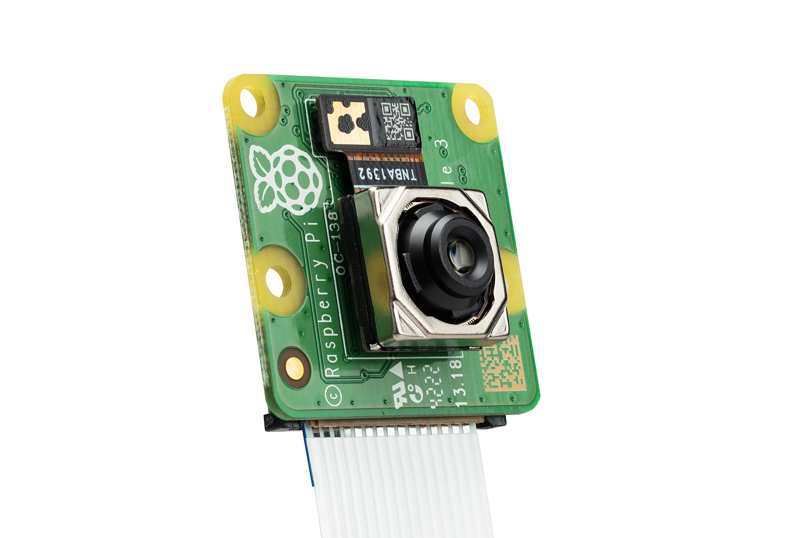

Raspberry Pi Camera Module Guide
What is the Raspberry Pi Camera Module?
The Raspberry Pi Camera Module is a cool add-on for your Magni robots. It’s a small camera that connects to the Raspberry Pi 5 inside the Mini. With a 12-megapixel sensor, autofocus, and the ability to take great pictures or videos, even in low light, it helps the robot see the world. It works with the robot’s software to capture whats around in front of it.
{kind=link}
Why is the Camera Useful?
See in Low Light: Takes clear pictures even when it’s dark, great for night projects.
Auto Focus: Adjusts focus on its own, making it easy to capture moving objects.
Wide Views: Comes in standard or wide-angle versions to see more around the robot. The robot comes with the standard version, but you can always switch it for the wide-angle version.
Basic Setup
Get your camera ready with these simple steps:
[
TODO: Add the steps for the camera setup. It would go something like this:
Power Off - Turn off your Raspberry Pi unplug it to stay safe.
Connect Cable
[Image of the cable and where it goes here]
Enable camera - [TODO: How?]
Check Setup -
[TODO: Image/s, and explanation how.]
]
Usage with Images and Explanations
Heres how to use the camera with your Magni robots:
[TODO: Detailed explanation with images.]
Project Link
Here is a fun project with the Pi Camera, using the Magni 6 Mini robot: Live Video Patrol